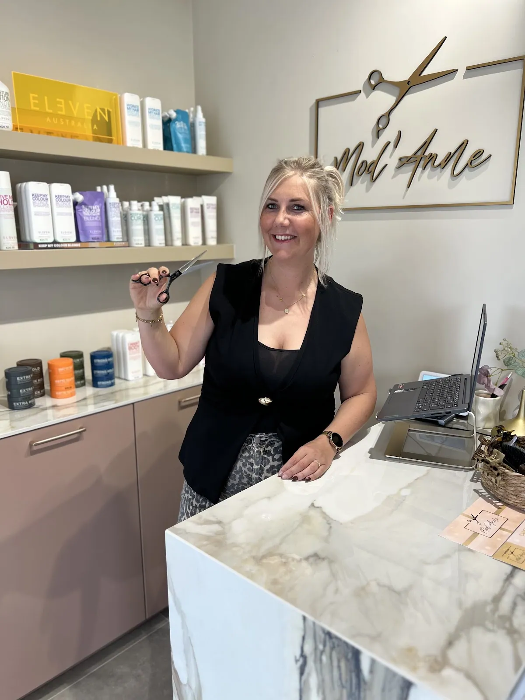
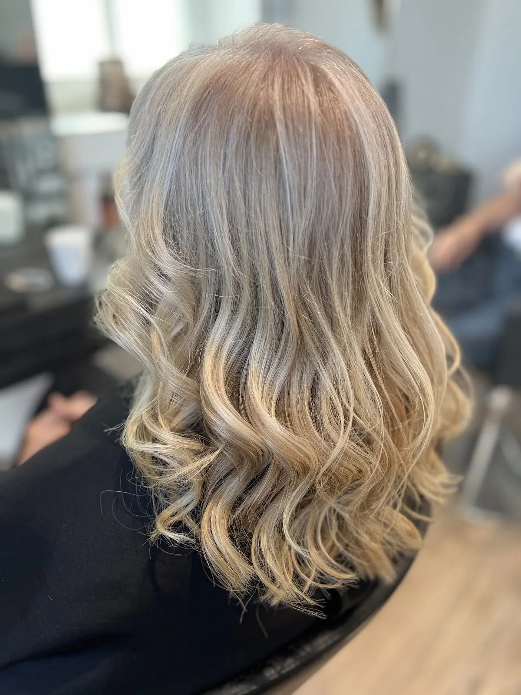
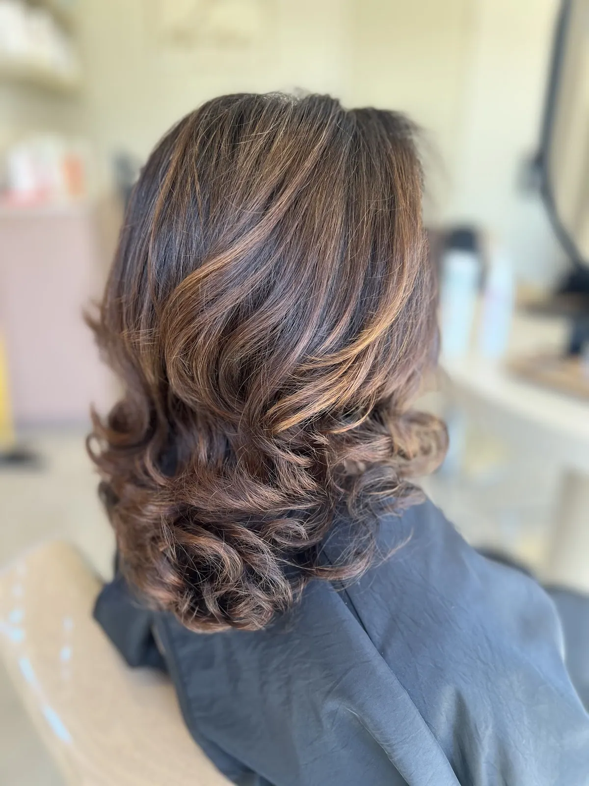
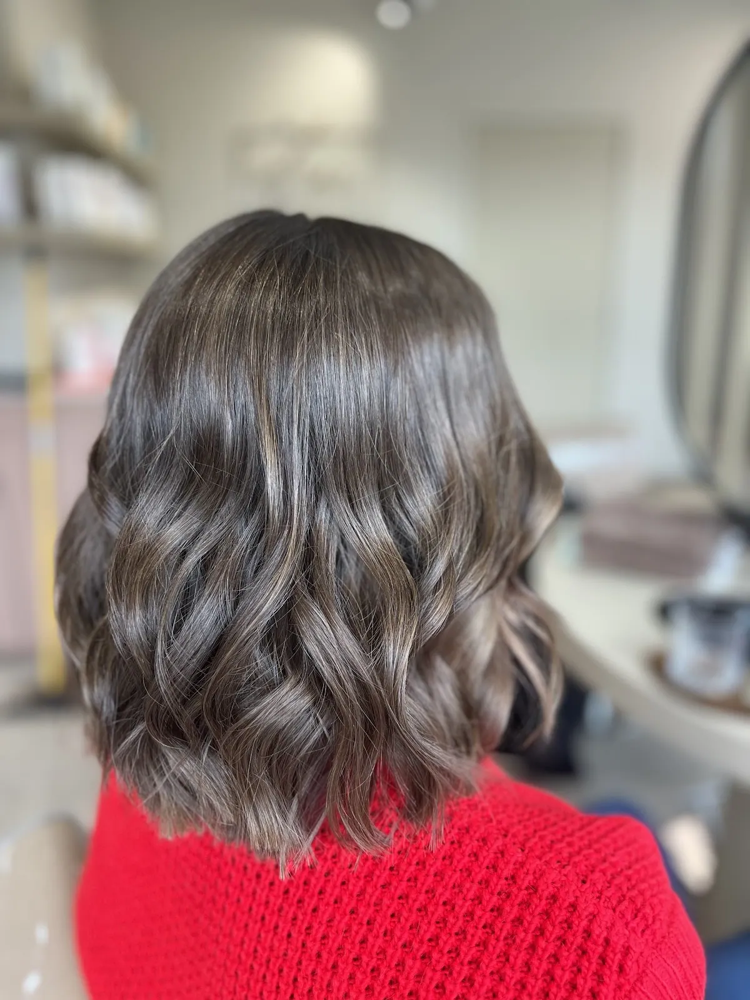
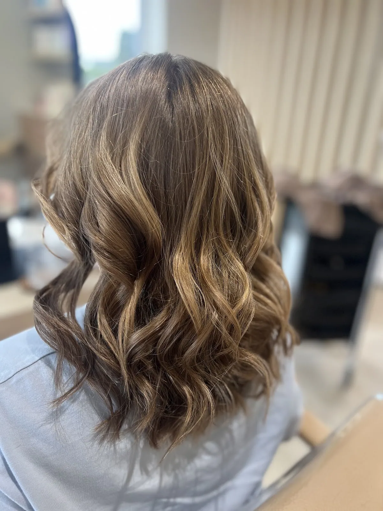
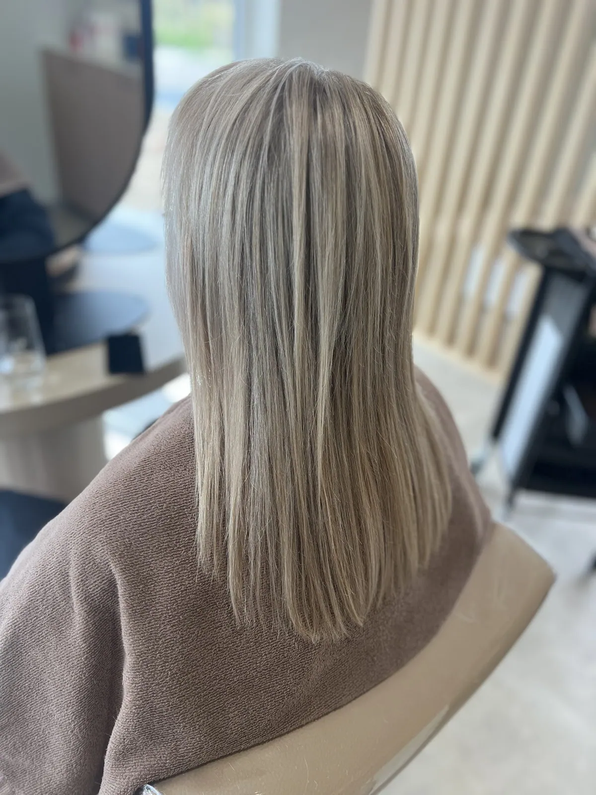
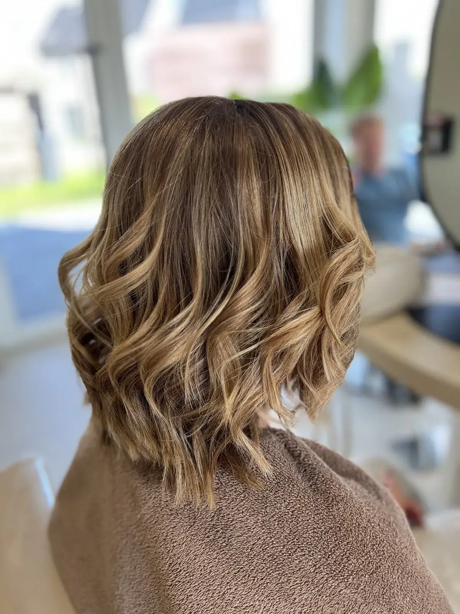
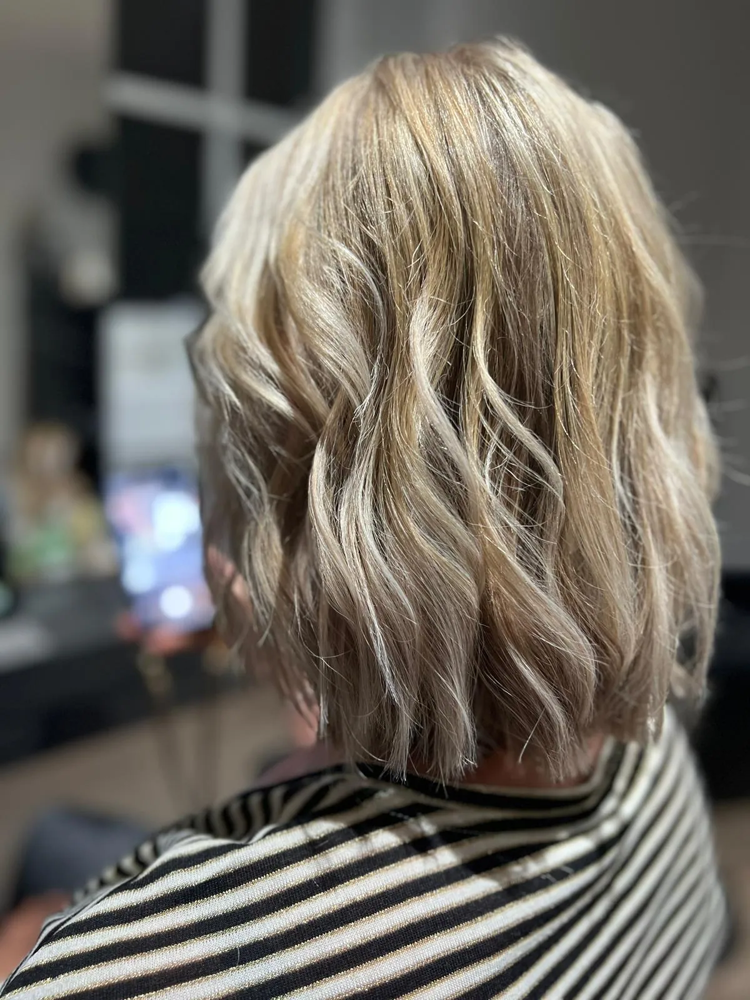
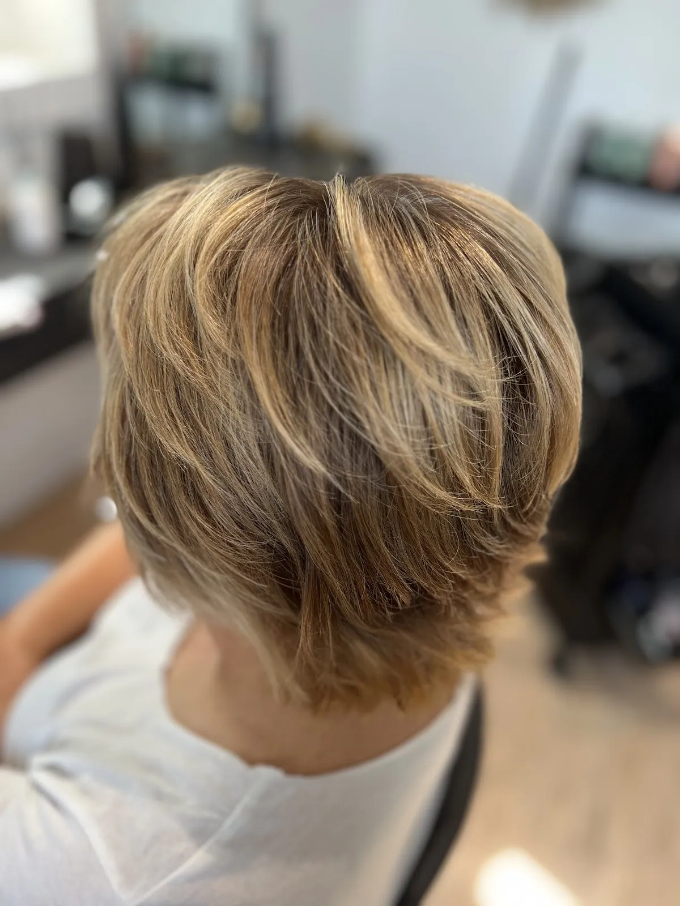
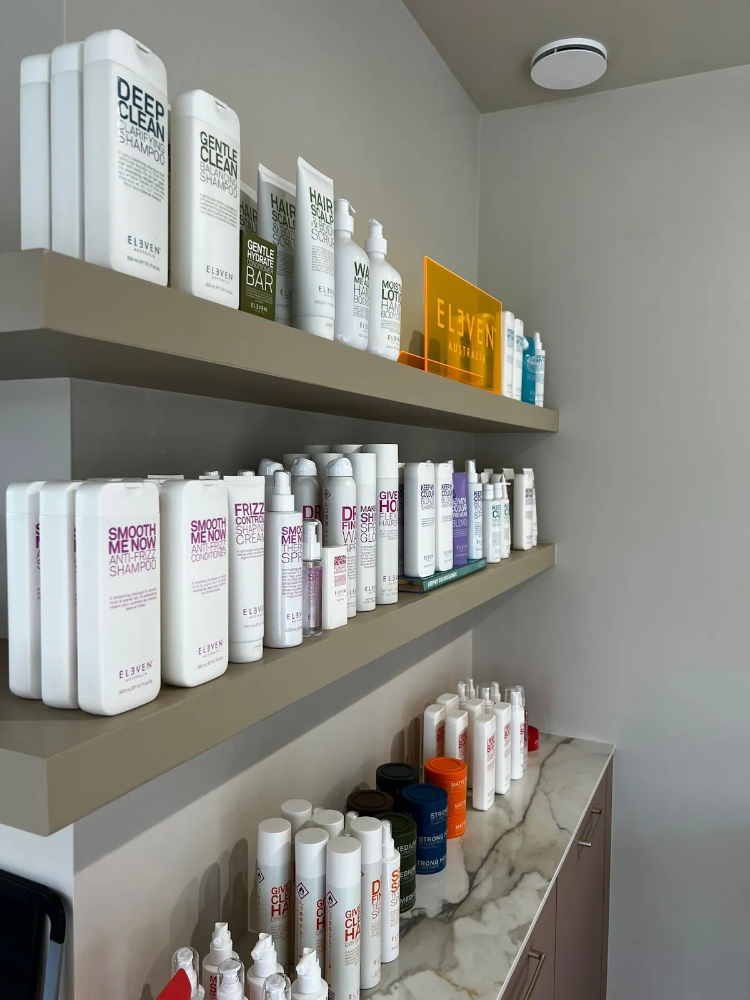

Dames
Knippen en brushen
Een nieuwe snit of gewoon de punten bij. Je krijgt erbij hoe je het thuis zelf mooi houdt.
Vraag een afspraakEen gezellige, moderne salon in de Schranckaert. Annelies knipt, kleurt en brusht voor het hele gezin. Ze neemt de tijd voor je en werkt toch lekker vlot, en je gaat naar buiten met een mooi kapsel en een paar handige tips.


Op maandag en dinsdag kan je bij Annelies terecht tot tien uur 's avonds. Handig als je overdag werkt, of als de kinderen pas na school kunnen. Alles gaat op afspraak, dus je zit nooit te wachten.
Geen studio en geen filters. Zo zien de kapsels eruit als klanten de deur uitgaan.







Weet je niet goed wat je wil? Annelies denkt mee en zegt eerlijk wat bij je haar past.
Een nieuwe snit of gewoon de punten bij. Je krijgt erbij hoe je het thuis zelf mooi houdt.
Vraag een afspraak
Grijs wegwerken, een tintje warmer of iets helemaal anders. Altijd na een kort gesprekje over wat je wil.
Vraag een afspraak
Zachte, natuurlijke lichtere stukken die mooi uitgroeien, zodat je niet elke maand terug moet.
Vraag een afspraakVoor een feest, een trouw of gewoon omdat het eens mag. Losse golven of strak gebrusht.
Vraag een afspraakEven langs na school of na het werk. Kinderen kijken er zelfs naar uit, zeggen de ouders.
Vraag een afspraak
Annelies werkt enkel met professionele producten van ELEVEN. Wat bij jou past, kan je ook mee naar huis nemen.
Vraag adviesAnnelies is al dertien jaar kapster en doet het nog altijd met evenveel goesting als op haar eerste dag. Ze volgt geregeld opleidingen, zodat ze mee is met nieuwe technieken, en werkt alleen met professionele producten.
Wat klanten het vaakst zeggen: je voelt je meteen welkom, er is tijd voor een babbel en toch staat je kapsel er snel. Mama's komen met de kinderen, en de kinderen willen terugkomen.
Mod'Anne is een kleine salon, dus de plaatsen zijn beperkt. Vind je online niet meteen een moment dat past? Stuur Annelies een berichtje, dan zoekt ze samen met jou.
Gemiddelde uit 32 reviews op Google.
Bekijk ze op Google →★★★★★“Super gezellig en modern kapsalon, altijd heel tevreden! Annelies werkt ook super snel.”
★★★★★“Super sympathieke dame. Annelies kent haar vak en zorgt goed voor jou!”
★★★★★“Vanaf het eerste moment voel je je meteen welkom. Ze maakt tijd voor je, maar werkt tegelijk efficiënt en vlot. Je krijgt ook handige tips mee, en haar passie voor het vak is duidelijk merkbaar.”
★★★★★“Een echt me-time moment bij Annelies! Supermooi salon, leuk en gezellig ingericht.”
Schranckaert 25, 1840 Londerzeel
0484 10 85 57
annelies.opdebeeck@hotmail.be
| Maandag | 9:00 - 22:00 |
| Dinsdag | 9:00 - 22:00 |
| Woensdag | Op afspraak |
| Donderdag | 9:00 - 18:00 |
| Vrijdag | 8:00 - 17:00 |
| Zaterdag | Gesloten |
| Zondag | Gesloten |
DIEen woordje uitleg van Stijn
Ik maakte deze demo voor jullie om te tonen wat er kan. Na een kort gesprek maak ik er iets veel persoonlijkers van, helemaal naar jullie wens.
Vrijblijvend. Ik kom langs of we bellen.
Op maat, op jullie eigen domein.
Geen voorschot. Jullie betalen pas als alles klaar is.
Hosting, domeinnaam en kleine wijzigingen, zoals nieuwe openingsuren.
Omdat een voorbeeld meer zegt dan een mail. Zo zien jullie meteen wat er kan, en het kost jullie niets.
Nee. Het gesprek is vrijblijvend. Vinden jullie het niks, dan is het daarmee gedaan.
Na ons gesprek staat jullie site binnen 10 tot 14 dagen online.
Zeker. Jullie domeinnaam kan gewoon blijven, de nieuwe site komt in de plaats van de oude.
Nee, dat doe ik op basis van ons gesprek. Eigen foto's zijn mooi meegenomen, maar niet nodig om te starten.